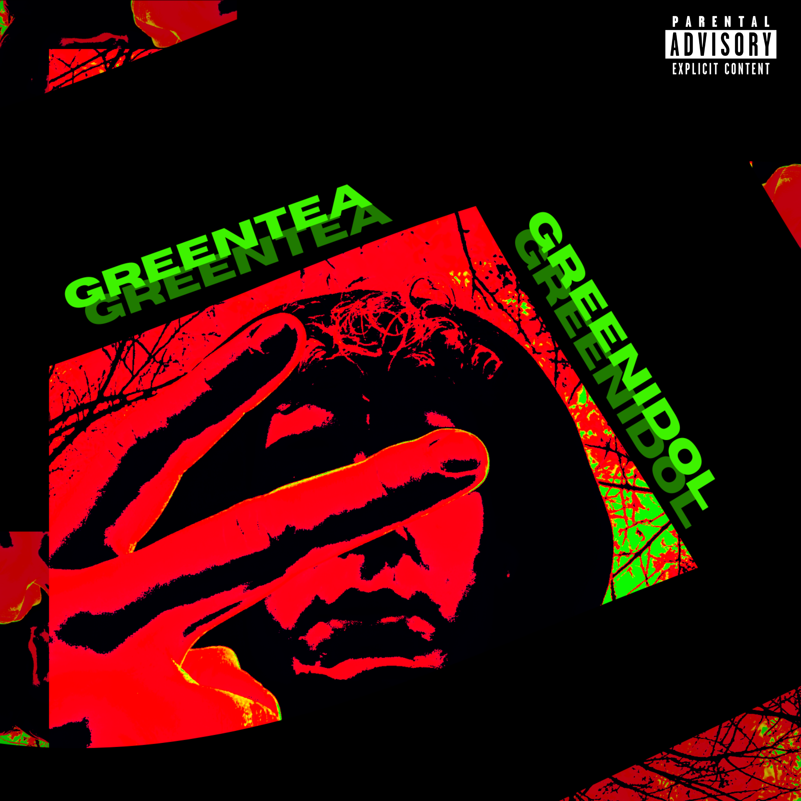
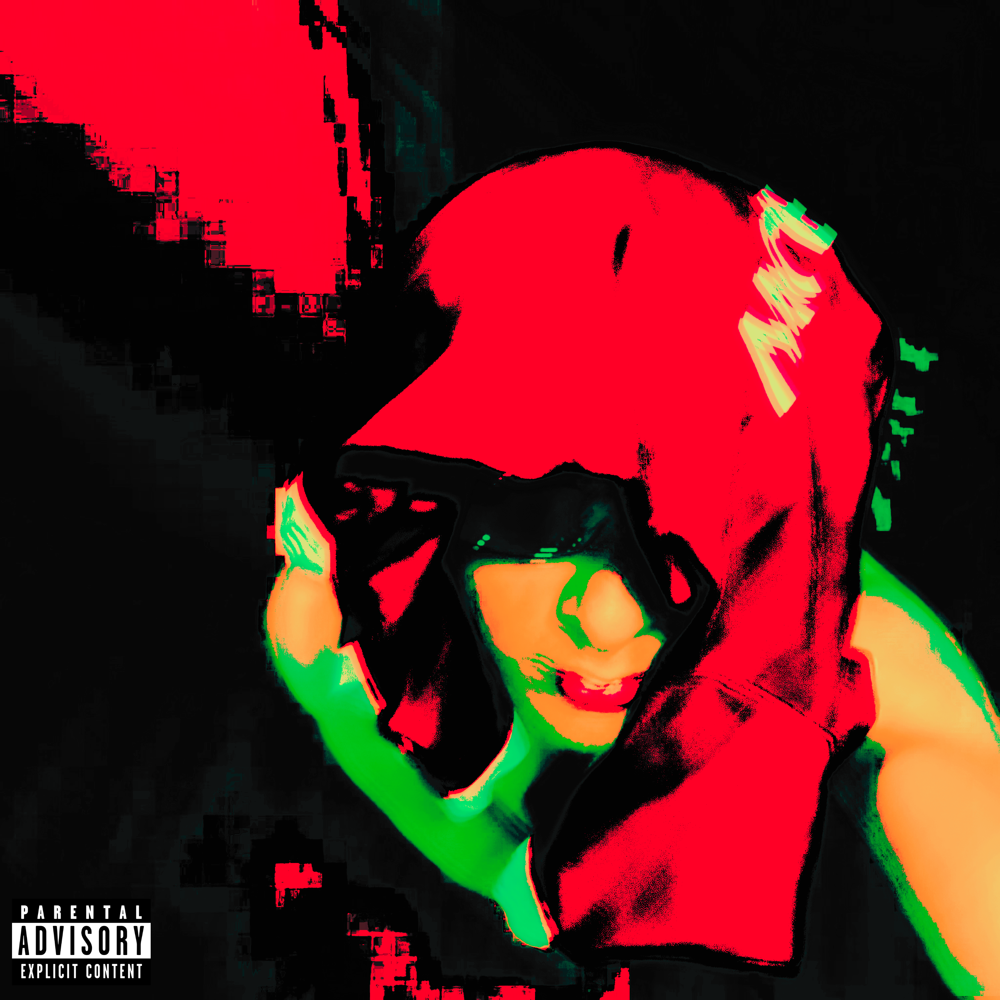
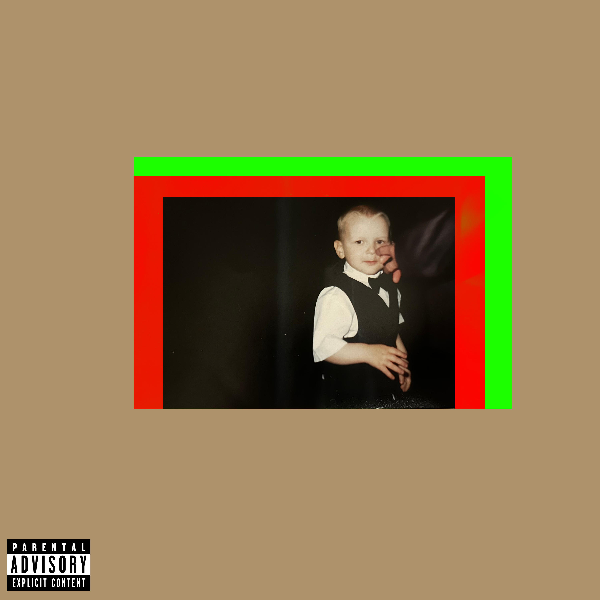

TRZPISU
Trzpisu born Maciej Trzpis, is a 19-year-old independent artist from Podkarpacie, Poland, emerging strongly in 2025. He has quickly crafted a unique sound characterized by deep bass, immersive atmospheres, and bold experimentation.
DISCOGRAPHY
-
whereyougoin’ - 05.09.2025
Debut single blending trap, lo-fi, and urban sounds. Themes: independence, self-discovery, ambition.
-
redgreen - 17.10.2025
Second single with experimental electronic layers. Shows artistic growth and originality.
-
definicja artysty - 12.12.2025
Third single summarizing his debut year. Highlights authenticity, vision, and creative freedom.
-
ONITONIT – 30.01.2026
Fourth single introducing a new freshness and a new wave. Signals a bold creative shift and sets the tone for the new year.
-
GREEN IDOL / GREEN TEA - album
Dual-concept album: GREEN IDOL - ambitious & energetic, GREEN TEA - calm & reflective. Contrasts fame with personal authenticity.
-
GREEN IDOL - 06.03.2026
Energetic single about identity, public image, and becoming an idol. -
GREEN TEA - 06.03.2026
Reflective single about clarity of mind, independence, and artistic balance. -
mdmd - 10.04.2026
The seventh single “mdmd” marks a turning point where Trzpisu’s vision starts to fully come together. From the very first seconds, the track hits with a strong, confident energy that feels tailor-made for the summer.
-
whereyougoin' 2 - 15.05.2026
The eighth single and a new version of the song that launched his musical journey. With a darker atmosphere and a more polished sound, the track breathes new life into the idea that started it all.
-
DON'T BE COMMON - 2026
His 9th single and another step forward in his artistic journey. The track is centered around individuality, ambition, and the determination to stand out rather than follow the crowd. Combining modern rap production, melodic elements, and confident delivery, it creates an energetic atmosphere while highlighting his growth as an artist and his vision for a fresh European rap sound.
-
RANDWSHADE - mixtape
Concept mixtape exploring ambition, identity, reflection, and personal growth through modern European rap.
-
BEFORE BEFORE - 21.07.2026
Atmospheric lead single introducing the world of RANDWSHADE through reflection and ambition. -
NEW THINGS (Intro) - 21.07.2026
Cinematic intro representing new beginnings, fresh ideas, and artistic evolution. -
GOODWAY - 21.07.2026
Motivational rap single about discipline, determination, and following your own path. -
FROM WEST TO EAST - 21.07.2026
Dynamic single blending cultures, influences, and a fresh European rap sound. -
NIEKONWENCJONALNY (Interlude 1) - 21.07.2026
Atmospheric interlude celebrating originality and creative freedom. -
AMBITION - 21.07.2026
Energetic single driven by confidence, hard work, and the pursuit of success. -
HIP-HOP - 21.07.2026
Modern tribute to hip-hop culture, authenticity, and artistic identity. -
KIERUNEK: NAUKA GRY - 21.07.2026
Focused rap track about learning, improving, and mastering the game. -
PLAYIN'CARDS (Interlude 2) - 21.07.2026
Cinematic interlude exploring choices, risks, and uncertainty. -
CHICO RAPIDO - 21.07.2026
Fast-paced rap anthem full of confidence, energy, and momentum. -
GOATEE - 21.07.2026
Confident modern rap single focused on individuality and self-expression. -
DISTURBING THOUGHTS - 21.07.2026
Emotional rap track exploring inner conflict and personal reflection. -
CLOSEANDCLOSED (Outro) - 21.07.2026
Reflective outro closing the mixtape with emotion and a sense of completion.